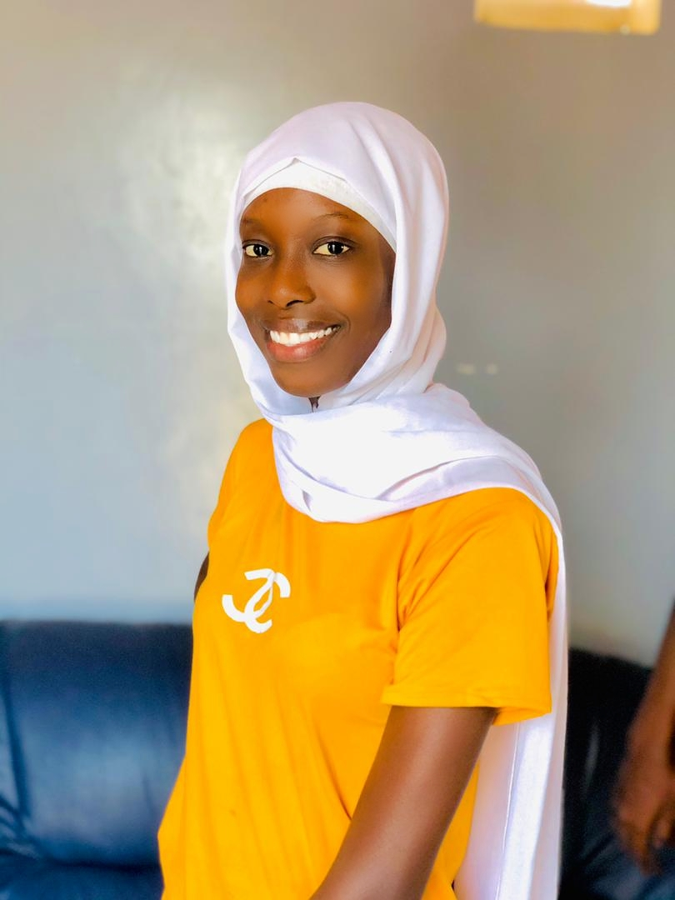

Profil
Développeuse Back End , je maîtrise le développement web surtout la programmation orientée objet PHP et tout cycle de développement en partant de la rédaction du cahier de charge jusqu'à la réalisation fonctionnelle. Je maîtrise la gestion de projets agiles ainsi que la modélisation de la base de données..
Télécharger mon CVCoordonées
Nom & PRÉNOM :
SOW Coumba
Adresse :
Malika
Téléphone :
77 744 92 74
Email :